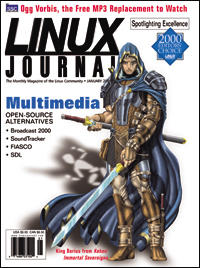

Shutdown Archive web server
Search:
Linux Journal
Issue #81/January 2001

Features
Focus: Multimedia
by Don Marti
Part II: A Profile of SoundTracker
by Dave Phillips
This article is based on a chapter from the author's book Linux Music & Sound, published by No Starch Press in October 2000.
FIASCO—An Open-Source Fractal Image and Sequence Codec
by Dr. Ullrich Hafner
FIASCO provides state-of-the-art image and video compression.
Moviemaking on a Linux Box? No Way!
by Adam Williams
Broadcast 2000 aims to bring together the art of making movies and the power of the Linux platform.
Running a Net Radio Station with Open-Source Software
by Andy Faulkner, Rich Smith, Brad Baylor, Jim Bailey, Paul Mack, Jim Lemaster and Tom Hartel
Seven Linux enthusiasts broadcast a weekly internet radio show.
Streaming Media
by Frank LaMonica
LaMonica describes the hardware and software technology used on the server side of the streaming process.
The Story of OpenAL
by Bernd Kreimeier
Kreimeier explores one of Loki's free software projects.
A Crash Course in SDL
by John Hall
An adaptation of a chapter from the author's upcoming book.
Ogg Vorbis—Open, Free Audio—Set Your Media Free
by Jack Moffitt
Ogg Vorbis is the Open Source Community's hot alternative to MP3.
An Introduction to MSERV
by Joshua Drake
Drake explains how MSERV can end musical dictatorship.
Indepth
Code Reviews
by Larry Colen
The best code reviews are the ones that actually get done.
Toolbox
Kernel Korner
Meddling with Memory
by Zhang Yong
At the Forge
Three-Tiered Design
by Reuven M. Lerner
Cooking with Linux
Music to Feed Your Soul
by Marcel Gagné
Paranoid Penguin
The 101 Uses of OpenSSH: Part I
by Mick Bauer
Columns
Linley on Linux: Home Network Push Accelerates
by Linley Gwennap
Focus on Software
by David A. Bandel
Focus on Embedded Systems
by Rick Lehrbaum
The Last Word
by Stan Kelly-Bootle
Games Penguins Play: Soldier of Fortune for Linux
by J. Neil Doane
Linux for Suits
The Morlock Market
by Doc Searls
Reviews
TuxTops Obsidian 30W
by Jon Valesh
SuSE Linux 7.0
by Stew Benedict
StarOffice 5.2
by Stephanie Black
CorelDRAW for Linux: f/x and Design
by Clifford Anderson
Departments
Letters
upFRONT
From the Editor
Editors' Choice Awards
Best of Technical Support
New Products
Archive Index
Shutdown Archive web server
Search:
Copyright © 1994 - 2018
Linux Journal
. All rights reserved.